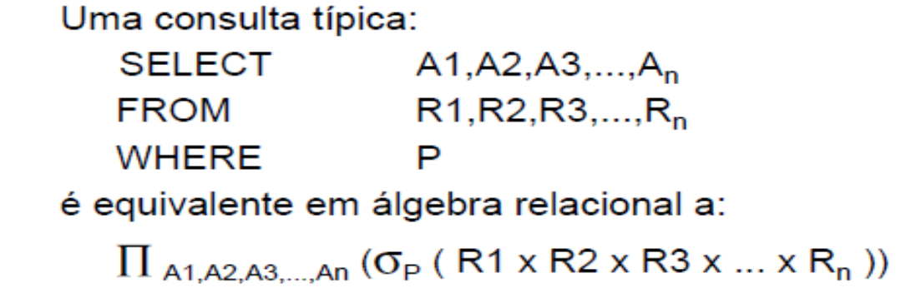
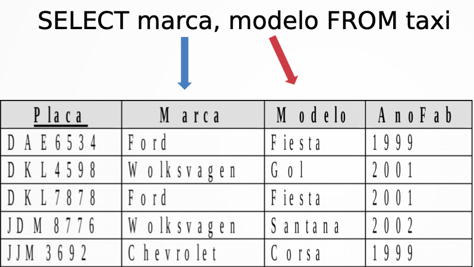
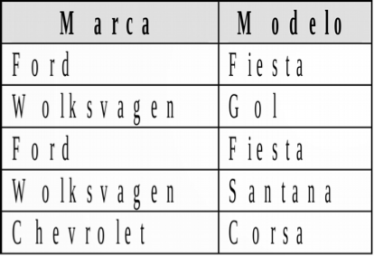
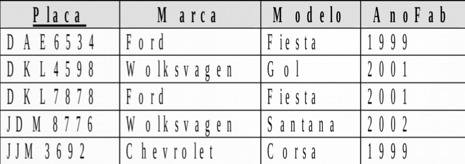
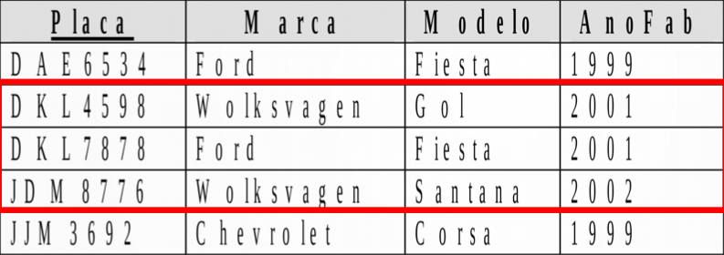

1 - Linguagem de Definição de Dados (DDL)
Aprenda a definir esquemas de relação, excluir relações e modificar
esquemas de banco de dados.
2 - Linguagem de Manipulação de Dados (DML)
Domine as habilidades para inserir, excluir e modificar dados, bem
como a linguagem de consulta. A linguagem de consulta é inspirada na
Álgebra Relacional.
3 - Linguagem de Controle de Dados (DCL)
Explore como gerenciar aspectos de controle de acesso entre usuários e
os dados no banco de dados.
4 - Linguagem de Transação de Dados (DTL)
Adquira conhecimento sobre o gerenciamento de aspectos relacionados a
transações de dados.
Definição de Dados (DDL)
Objetos
Esquemas (Banco de dados)
Tabela (Relação)
Visões (views)
Asserções
Gatilhos (triggers)
Paralelos com Modelo Relacional
Tabela = Relação
Linha = Tupla
Coluna = Atributo
O comando `CREATE` é usado para criar objetos dentro de um banco
de dados, como tabelas, índices, visões, procedimentos armazenados
e muito mais. Ele permite que você defina a estrutura e as
propriedades dos objetos que serão usados para armazenar e
gerenciar dados.
Exemplo
Comando SQL
Descrição
CREATE DATABASE <nome_do_banco>;
Cria um novo banco de dados com o nome especificado.
O comando `ALTER` é usado para fazer alterações em objetos que já
existem no banco de dados. Isso pode incluir adicionar, remover ou
modificar colunas em uma tabela, alterar as propriedades de uma
visão ou procedimento armazenado, entre outras ações.
Exemplo
Comando SQL
Descrição
ALTER TABLE <tabela> ADD <coluna> <tipo>;
Adiciona uma nova coluna à tabela especificada com o tipo de
dados especificado.
ALTER TABLE <tabela> DROP <coluna>;
Remove uma coluna específica da tabela.
Exemplos
Alguns exemplos de uso dos comandos SQL.
ALTER TABLE cliente_particular ADD email varchar(255);
Adiciona uma coluna chamada "email" à tabela
"cliente_particular" com o tipo de dados "varchar(255)".
ALTER TABLE cliente_particular DROP email;
Remove a coluna "email" da tabela "cliente_particular".
O comando `DROP` é usado para excluir (apagar) objetos do banco de
dados. Isso pode ser usado para remover tabelas, índices, visões
ou qualquer outro objeto que não seja mais necessário ou desejado
no banco de dados.
Exemplo
DROP TABLE <tabela>
Exluir tabela existente
Manipulação de Dados (DML)
Inserir Registros (INSERT)
A operação INSERT é utilizada para adicionar novos registros ou
linhas a uma tabela em um banco de dados. Os novos registros contêm
informações específicas que são fornecidas, e eles são adicionados
sem afetar as informações existentes. Essa operação é fundamental
para a inclusão de novos dados no banco de dados.
● Script para popular banco Sistema de Taxi
INSERT INTO cliente VALUES
('1755', 'Doriana'),
('93','DinoTech'),
('1532','Asdrúbal'),
('1780','Quincas'), ('97','Proj');
INSERT INTO cliente_particular VALUES
('1755', '567.387.387-44'),
('1532', '448.754.253-44'),
('1780', '576.456.123-55');
INSERT INTO cliente_empresa VALUES ('93', '58.443.828/0001-02'),
('97', '44.876.234/7789-10');
INSERT INTO taxi VALUES
('DAE6534','Ford','Fiesta',1999),
('DKL4598','Wolksvagen','Gol',2001),
('DKL7878','Ford','Fiesta',2001),
('JDM8776','Wolksvagen','Santana',2002),
('JJM3692','Chevrolet','Corsa',1999);
INSERT INTO corrida VALUES ('1755', 'DAE6534', '2003-02-15'), ('97',
'JDM8776', '2003-02-18');<
Atualizar Registros (UPDATE)
A operação UPDATE é empregada para modificar registros existentes em
uma tabela de banco de dados. Isso permite a atualização de
informações em uma ou várias colunas de um registro sem
necessariamente alterar sua identificação única. O UPDATE é útil
para manter os dados precisos e atualizados.
● Modifica os valores dos atributos das linhas da tabela em que o
predicado especificado seja verdadeiro
UPDATE & tabela> SET <ampo1> = <valor1> [, ..., <campon>
vvalorn>] WHERE ⪙condição>
● Exemplo: UPDATE cliente SET nome = ‘Doris’ WHERE id = ‘93’
● Uma atualização no valor da chave primária pode propagar-se
dependendo de como a restrição de chave estrangeira foi criada.
Remover Registros (DELETE)
A operação DELETE é usada para excluir registros de uma tabela. Isso
permite a remoção permanente de dados específicos que não são mais
necessários ou desejados. É importante usá-la com cautela, pois a
exclusão de registros é irreversível.
● DELETEFROM<tabela>WHERE<condição>
● Exemplo: DELETE FROM corrida WHERE placa = ‘DAE0534’
● Exclui todos os registros da tabela em que o predicado
especificado seja verdadeiro
● A exclusão não pode violar as restrições de integridade
referencial (chave estrangeira) ● Alguns SGBDs permitem
exclusõe sem cascata
Realizar Consultas (SELECT)
A operação SELECT é empregada para recuperar informações de um banco
de dados. Ela permite que você especifique critérios de pesquisa e
obtenha resultados com base nessas condições. Essa operação é
fundamental para consultar, filtrar e recuperar dados específicos de
uma tabela, proporcionando insights e informações relevantes.
● Consulta os dados presentes no banco ● Estrtura básica:
SELECT <lista de atributos>]
FROM <lista de tabeas>]
WHERE <condição>
• Lista de atributos: nomes dos atributos a serem recuperados pela
connsulta - Quando a lista de atributos envolver todos os
atributos da relação, pode-se usar *
• Lista de tabelas: nomes das tabelas envolvidas no processamento da
consulta – Mais de uma tabela -> produto cartesiano ou
junção
SELECT <lista de atributos>]
FROM <lista de tabeas>]
WHERE <condição>
• Condição: expressão booleana que identifca as linhas a serem
recuperadas pela consulta
– pode conter: • Conectivos logicos: AND, OR, NOT
• Operadores de comparação: < ,<=, > ,>= , = , <> •
Comparador de string: LIKE. Usado de duas maneiras:
– LIKE ‘%<parte da string>%’
– LIKE ‘_ _ _ <parte da string> _ _ _’
Select x Álgebra Relacional

● Diferentemente da Álgebra, o SELECT não elimina repetições do
resultado. É necessário forçar usando a palavra-chave DISTINCT.
Exemplo: ● SELECTDISTINCT<atributtos>FROM⪙ltabelas>
Select - Projeção
Selecionar as marcas e modelos de táxi

SELECT marca, modelo FROM taxi

Selecionar os táxis fabricados após o ano 2000

SELECT * FROM Taxi WHERE anofab > 2000

Linguagem de Controle de Dados (DCL) em Bancos de Dados
A Linguagem de Controle de Dados (DCL) é uma parte essencial da
linguagem SQL (Structured Query Language) que se concentra no
gerenciamento de permissões, privilégios e controle de acesso em
bancos de dados. Essa linguagem desempenha um papel fundamental na
segurança e integridade dos dados armazenados em sistemas de
gerenciamento de banco de dados (DBMS). Vamos explorar como a DCL é
usada para gerenciar aspectos de controle de acesso entre usuários e
dados no banco de dados.
Conceito Básico
Em essência, a DCL permite aos administradores de banco de dados
controlar quem pode acessar, modificar e excluir informações
específicas no banco de dados. Ela define quem tem permissões para
executar ações como SELECT (recuperar dados), INSERT (inserir dados),
UPDATE (atualizar dados) e DELETE (excluir dados) em tabelas ou
objetos dentro do banco de dados.
Principais Instruções DCL
Existem duas instruções principais na DCL:
GRANT (Conceder): A instrução GRANT é usada para conceder permissões
ou privilégios a usuários ou funções específicas. Por meio do GRANT,
os administradores podem determinar quais operações um usuário ou
função tem permissão para executar em objetos do banco de dados.
Exemplo de GRANT:
SQL
GRANT SELECT, INSERT, UPDATE ON tabela_exemplo TO usuario1;
REVOKE (Revogar): A instrução REVOKE é usada para retirar permissões
previamente concedidas. Isso permite que os administradores restrinjam
ou removam o acesso a operações específicas em tabelas ou objetos do
banco de dados.
Exemplo de REVOKE:
SQL
REVOKE SELECT ON tabela_exemplo FROM usuario1;
Importância do DCL
O uso adequado da DCL é crucial para manter a segurança e a
integridade dos dados em um banco de dados. Com o controle de acesso,
é possível garantir que apenas usuários autorizados possam realizar
ações específicas. Isso ajuda a prevenir erros acidentais e
intencionais que possam comprometer a integridade dos dados.
Recomendações de Uso
Aqui estão algumas recomendações importantes ao trabalhar com a
DCL:
Princípio do Privilégio Mínimo: Conceda apenas os privilégios
necessários para que os usuários realizem suas tarefas. Evite conceder
permissões em excesso, pois isso pode aumentar os riscos de
segurança.
Monitoramento e Auditoria: Mantenha um registro das concessões e
revogações de permissões. Isso permite rastrear quem tem acesso a
quais dados e quando as alterações ocorreram.
Revisões Periódicas: Periodicamente, revise as permissões concedidas
para garantir que estejam alinhadas com as necessidades do usuário e
as políticas de segurança.
Linguagem de Transação de Dados (DTL)
A Linguagem de Transação de Dados (DTL) desempenha um papel crucial na
gestão de transações em sistemas de gerenciamento de bancos de dados
(SGBDs). As transações são unidades de trabalho que envolvem uma série
de operações de banco de dados. A DTL fornece os mecanismos
necessários para garantir que as transações sejam executadas de forma
consistente e confiável, mesmo em cenários de falha.
Princípios Fundamentais das Transações
As transações de
dados seguem quatro propriedades ACID, que garantem a integridade e a
confiabilidade dos dados:
Atomicidade: Isso significa que uma transação é uma operação única e
indivisível. Ou seja, todas as operações em uma transação são
concluídas com sucesso ou nenhuma delas é executada. Isso garante que
o banco de dados permaneça em um estado consistente.
Consistência: As transações devem levar o banco de dados de um estado
consistente para outro. Isso implica que todas as regras de
integridade do banco de dados devem ser mantidas após a conclusão da
transação.
Isolamento: Cada transação deve ser isolada das outras. Isso significa
que o resultado de uma transação não é visível para outras transações
até que a primeira seja concluída. Isso evita conflitos e
inconsistências de dados.
Durabilidade: Uma vez que uma transação é confirmada (commit), suas
alterações são permanentes e persistem mesmo em caso de falha do
sistema. Isso garante que os dados sejam seguros e confiáveis.
Comandos da DTL
Para gerenciar transações, a DTL fornece
os seguintes comandos principais:
BEGIN TRANSACTION ou BEGIN WORK: Inicia uma nova transação.
COMMIT: Confirma a transação, tornando as alterações permanentes.
ROLLBACK: Desfaz todas as alterações feitas durante a transação,
restaurando o estado anterior.
SAVEPOINT: Cria um ponto de salvamento dentro da transação, permitindo
que você desfaça até esse ponto, se necessário.
Importância da DTL
A DTL desempenha um papel fundamental em aplicações críticas, como
sistemas de bancos, comércio eletrônico e sistemas de reserva, onde a
integridade e a confiabilidade dos dados são essenciais. Ela garante
que as transações sejam executadas de maneira segura, mesmo em
situações imprevistas, como falhas de hardware ou interrupções.
O entendimento da Linguagem de Transação de Dados é crucial para
administradores de bancos de dados, desenvolvedores e qualquer pessoa
que trabalhe com sistemas que envolvem interações com bancos de
dados.
Agora, você pode adicionar esse conteúdo à sua página da seção
"Linguagem de Transação de Dados (DTL)" em seu site, adaptando-o
conforme necessário. Certifique-se de que o estilo e a formatação se
ajustem ao design geral do seu site.